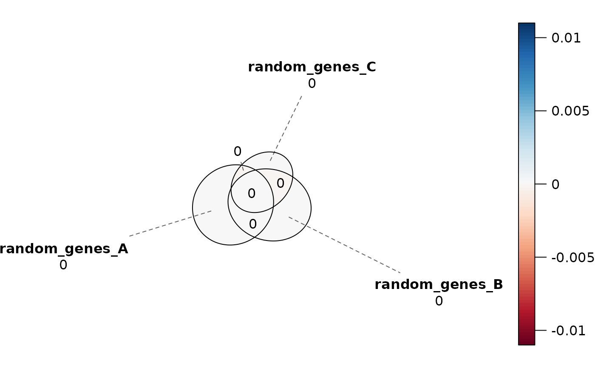

Redraws the Venn diagram produced by plotVenn, shaded by the
signed error of each region, so that the regions the diagram gets wrong can
be read off the picture rather than inferred from a single summary
statistic. This is a thin wrapper around error_plot.
Arguments
- venn
A plot returned by
plotVenn, carrying the"euler_fit"attribute that function attaches. Note that this is theplotVenn()output, not theGenomicOverlapResultorSetOverlapResultthatplotVenn()itself takes.- ...
Additional arguments passed to
error_plot.
Value
The plot returned by error_plot, a gTree
that can be drawn, arranged with other grobs, or written out with
saveViz.
Details
Where diagError reports how far off the worst region is, this plot shows
which regions are off and in which direction, with each region's
regionError printed inside it. Use it when diagError exceeds 1e-6.
Examples
data(gene_list)
res_sets <- computeOverlaps(gene_list)
# Where does the diagram misrepresent the counts?
venn <- plotVenn(res_sets)
#> ✔ Venn diagError = 1.728e-14 (<= 1e-06)
#> Access fit diagnostics with attr(<plotVenn output>, "fit_diagnostics")
plotVennError(venn)
